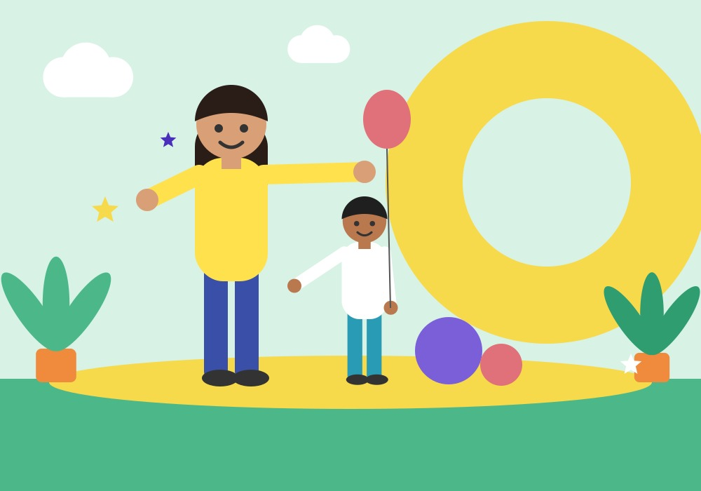
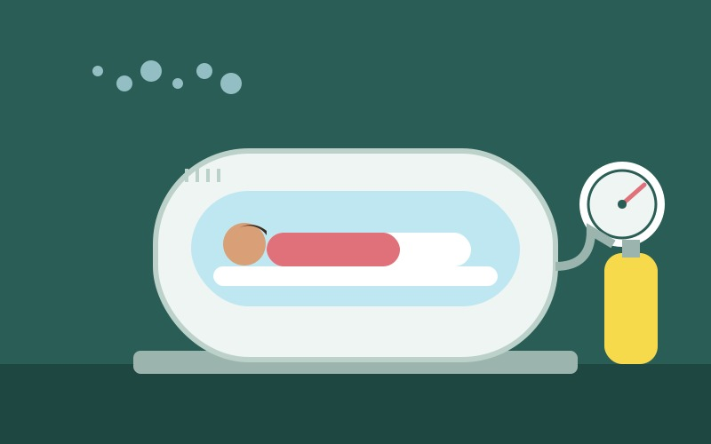
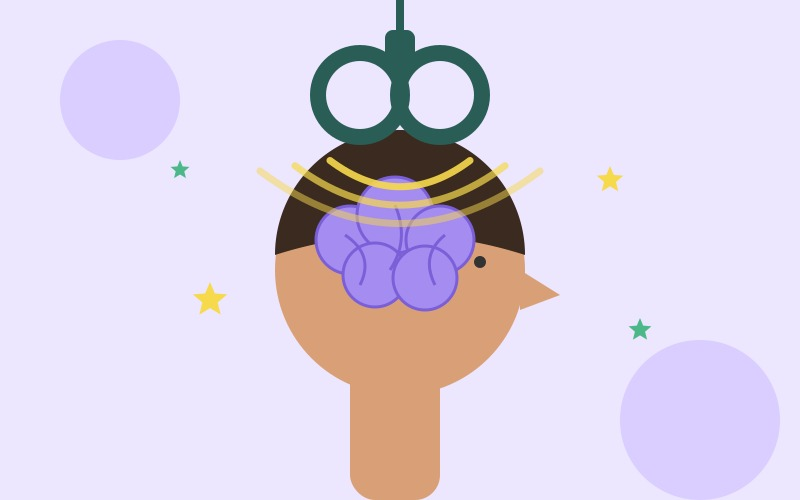
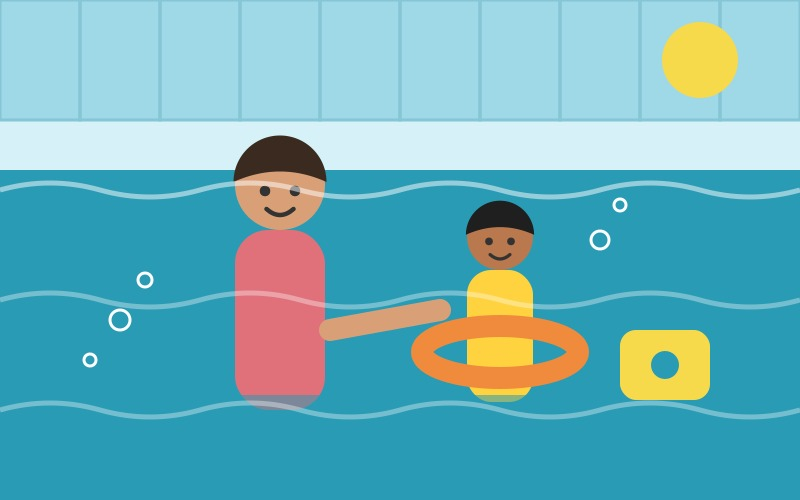

elige un tema
selecciona la situacion que mas se parece a lo que buscas.
encuentra actividades sencillas para hacer en casa, a tu ritmo. elige una guia, revisa sus cuidados y registra tu avance si quieres.

selecciona la situacion que mas se parece a lo que buscas.
cada actividad explica que necesitas, como empezar y cuando detenerte.
puedes hacer una actividad, descansar o pedir orientacion profesional.
son ideas generales para acompanamiento. no diagnostican ni sustituyen la atencion profesional.
Cargando programas disponibles...
requieren equipo y personal capacitado. no intentes reproducirlos en casa.

servicio presencial con valoracion y supervision profesional.

servicio especializado que requiere valoracion medica.

requieren instalaciones y atencion de personal capacitado.
horario: lunes a viernes, de 8:00 a.m. a 4:00 p.m.
telefonos: 4939357179 y 4939357809
direccion: avenida fresnos no. 54, col. luis donaldo colosio, fresnillo, zacatecas
redes: apac fresnillo en facebook; @apacfresnillo en x e instagram.
si hay riesgo inmediato para una persona, contacta los servicios de emergencia de tu localidad. estas guias no sustituyen una valoracion profesional.
reg. cofepris 2432035036X00130